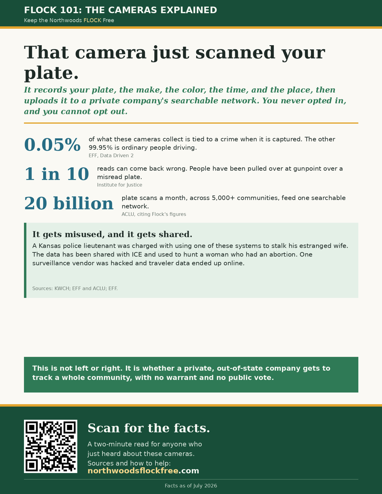
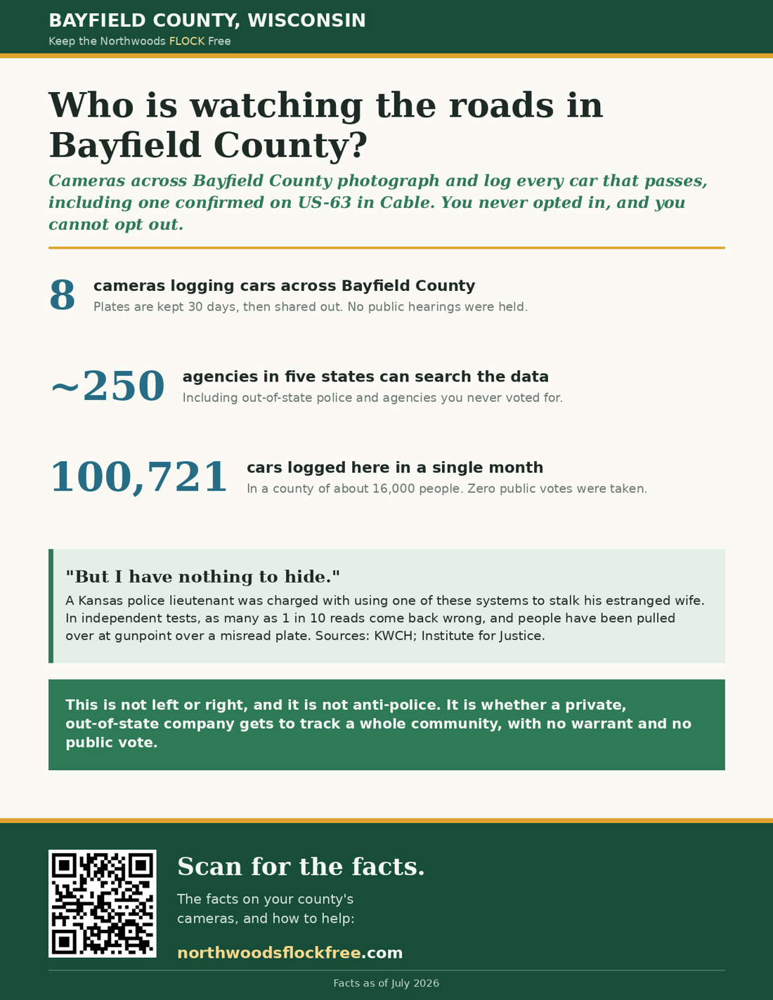
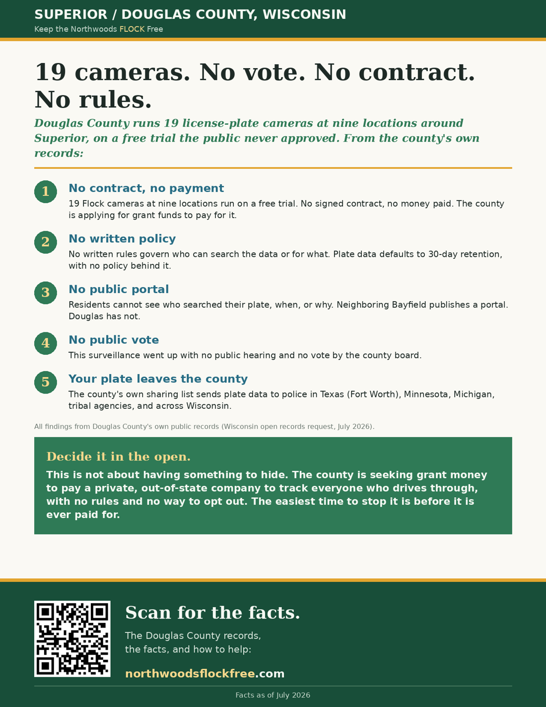
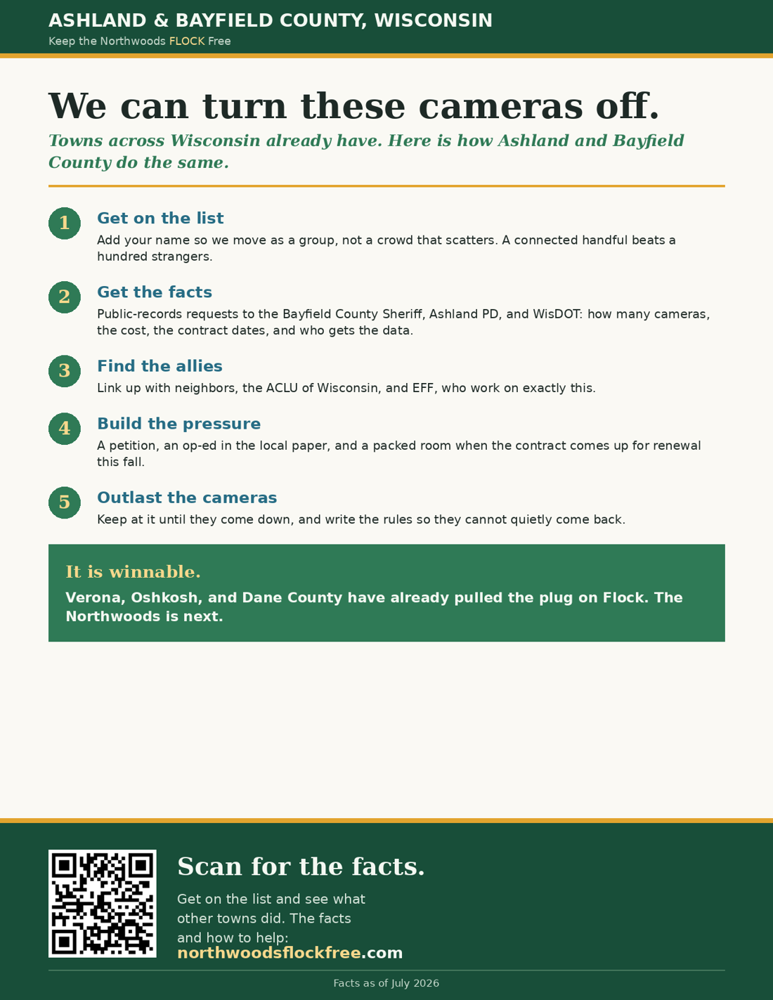
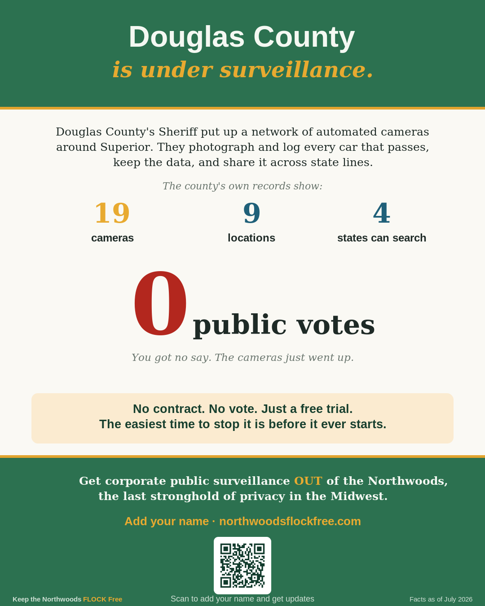
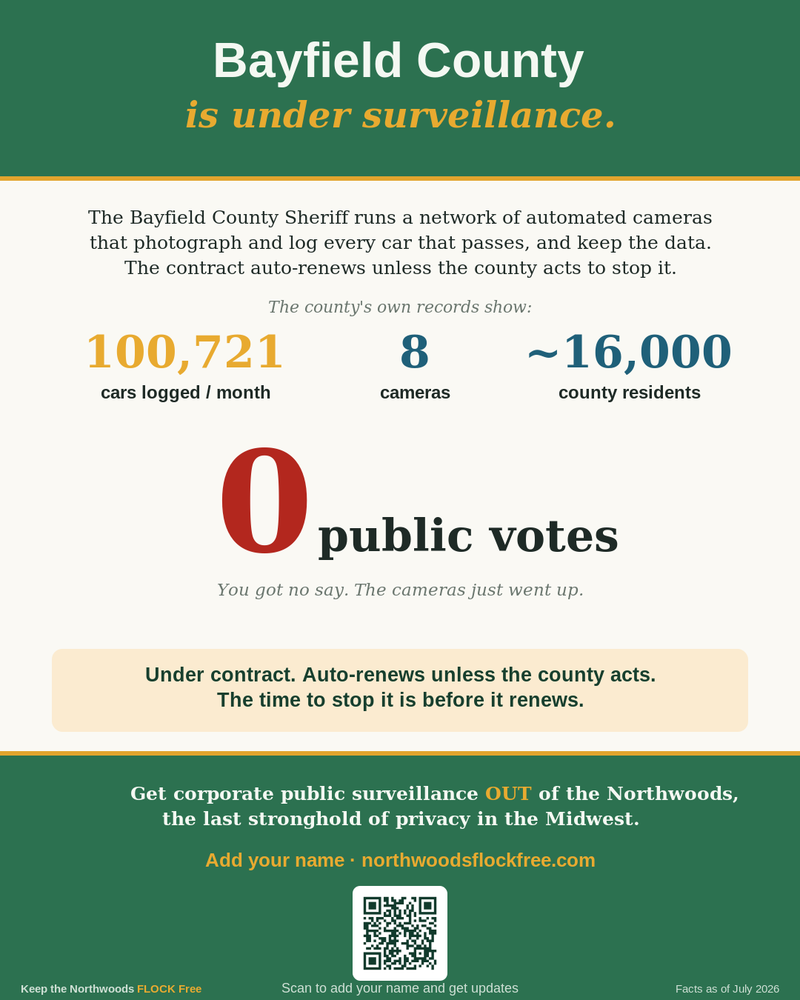
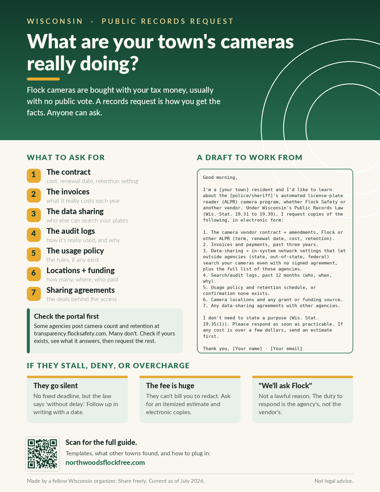
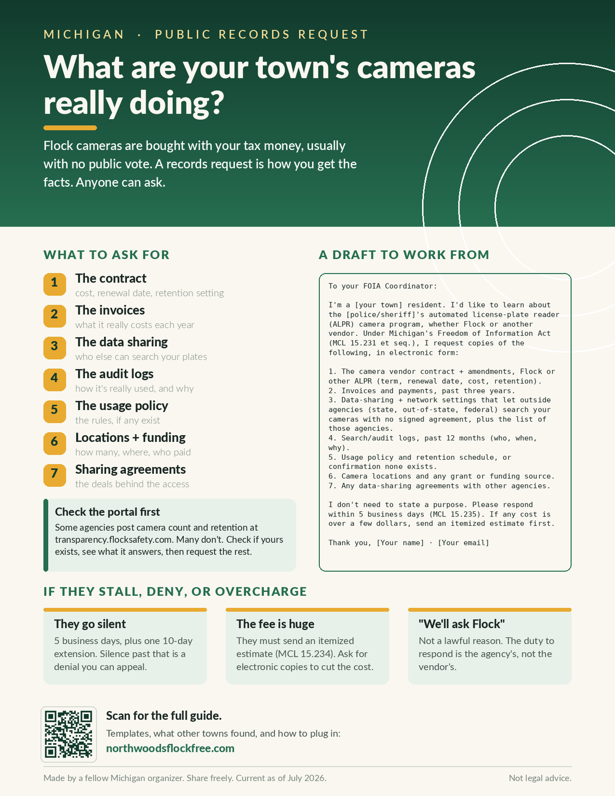

Downloads
Print them, post them online, hand them out. Preview each one below. The flyers are the current Wisconsin versions; we're building out ones for other areas, so check back or reach out for a version for your town.
Print flyers (8.5 x 11)
Letter-size PDFs made for printing and handing out. Every one also works sent as a link or an attachment.

Flock 101: the cameras explained
A two-minute, plain-language explainer of what these automatic license-plate readers do and why people are worried. Good for anyone who just heard about them.

Who's watching Bayfield County?
The one-page flyer with the local camera facts. Works as a poster or a handout.

Douglas County findings
What a records request turned up about the Superior-area camera network. A one-page handout for Douglas County.

How we fight back
A five-step plan to turn the cameras off, and the Wisconsin towns that already have. Pairs well with any flyer above.
Social media images
Share-ready images sized for Facebook and Instagram. Post one, add it to a story, or send it to a neighbor. Spreading these is one of the most useful things you can do from your couch.

Douglas County social image
The Superior-area facts in one share-ready image: 19 cameras on a free trial no one voted on, with plates searchable from four states.
{kind=link}

Bayfield County social image
Bayfield's numbers in one share-ready image: 100,721 cars logged in a month in a county of about 16,000, on a contract no one voted on.
{kind=link}
File a records request
The single most useful thing one person can do: ask your own county what its cameras are doing. Seven things to ask for, and a request you can copy, paste, and send.

Wisconsin records request
Seven things to ask for and a complete copy-paste request under Wisconsin's Public Records Law. Anyone can send it. No lawyer, no fee, no reason needed.

Michigan records request
The same guide for Michigan neighbors, built on Michigan's FOIA: what to ask for, the copy-paste letter, and what to do if they stall or overcharge.
Records law is different in every state. These are written for Wisconsin and Michigan. Somewhere else, like Minnesota? Reach out and we'll help you get the right version for where you live.